。（4）如果 小到某个程度，以至认为是发生概率这么小的事件为不可信，则认为数据没有给假设以足够的支持，或反过来说，数据支持“效应存在”的说法。反之，若 并非足够小，则数据没有给予“否定假设”以足够的支持，换一个说法是：对“效应存在”的说法，从数据中并未得到充分的支持。
。（4）如果 小到某个程度，以至认为是发生概率这么小的事件为不可信，则认为数据没有给假设以足够的支持，或反过来说，数据支持“效应存在”的说法。反之，若 并非足够小，则数据没有给予“否定假设”以足够的支持，换一个说法是：对“效应存在”的说法，从数据中并未得到充分的支持。5.1 显著性检验
按现代生物学的观点，生男生女应有同等的机会。印度著名统计学家 C.R. 劳在其所著《统计与真理》一书中提到，他在加尔各答印度统计研究所给一年级研究生上课时，经常让他们去附近的一家医院，记录相继在医院出生的婴儿的性别，以获得关于二元随机序列的直观概念。但很早以来，人类从经验中了解到一个现象：生男的机会略大于生女。最早提到有关的统计数字的一本著作，是格朗特的《关于死亡公报的自然和政治观察》——此书及其在统计学史上的地位曾在第 3 章中提及。
格朗特在书中根据多年的统计资料，计算出当时在伦敦生男生女的比率为 14∶13。他说：“这表明比起国内的其他地方来，伦敦更倾向于生男孩。”他做出这一论断，可能是由于他对伦敦以外的统计资料不了解，以及他相信生男生女应有同等的机会的观点。他在书中也建议对此做进一步的研究。
到 1710 年，有一位名叫阿布兹诺特的学者，在英国皇家学会宣读了一篇题为《从两性出生数观察的规律性所得关于神的意旨存在的一个论据》的论文，从数学的观点对此问题做了探讨。他研究了自 1629 年至 1710 年伦敦出生的男婴、女婴数目，发现在这连续的 82 年中都是男多于女。他于是如下这样推理。有两种可能性：（1）生男生女纯出于偶然（即有同等机会）；（2）由于“神的意旨”，生男的机会大于生女。如果（1）成立，则在一年内出生的男婴多于女婴的概率，不超过 1/2，因而连续 82 年出现这种情况的概率，不应超过
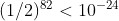
。概率如此小的一个事件（相当于一个盒子中有 1 亿亿亿个球，其中只有一个白球，要在一次随机抽取中恰好抽到这个白球）居然发生了，这是不合情理的。因此，我们有理由否定（1）而接受（2）。阿布兹诺特的工作在统计史上有重要的意义，因为他首次提出了利用统计数据去验证一种说法（理论、学说、假说等）是否成立的问题，并在该特定的问题中提出了具体的处理方法。经过 20 世纪前期一些重要的统计学者的发扬光大，发展成统计推断中最重要的分支之一——假设检验，即用数据资料去检验某一假设（说法）是否成立。
我们曾多次提到的费歇尔，是这些大学者之一。他曾用一个“女士品茶”的例子来说明他的“显著性检验”的思想。一种饮料由牛奶（milk）和茶（tea）混合而成，调制时可以先倒茶后倒牛奶（TM），也可以先倒牛奶后倒茶（MT）。有一位女士说她能分辨（鉴别）此二者。费歇尔设计了一个试验来检验该女士的说法是否属实。试验的布置如下。准备 8 杯看上去一样的饮料，其中 TM 和 MT 各 4 杯，把这一点告诉该女士（但不指出哪 4 杯是 TM），然后让她品尝这 8 杯饮料，指出哪 4 杯是 TM。根据她的回答来估量她是否确有分辨 TM 和 MT 的能力。
现设结果是该女士 4 杯全说对了，该如何评估这个结果？费歇尔的推理与阿布兹诺特相似。假设该女士毫无分辨能力，则这 8 杯饮料对她来说毫无差别，她从中挑出 4 杯，纯是一种随机的举动，即挑出任意 4 杯都有同等可能。从 8 杯中挑出 4 杯的不同挑法，有
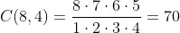
种（见第 1 章公式（2）），其中只有一种是全部挑对，其可能性（概率）只有 1/70。因此，在“该女士 4 杯全部挑对”这个试验结果出现时，只有两种可能的解释：
按上面的计算，若坚持第一种解释，则我们就得承认：发生了一件其概率只有 1/70 的事情。由于 1/70 相当小，这看上去不大可信，因而我们摒弃这一解释而接受第二种解释。结论：试验结果支持“该女士对 TM 和 MT 有一定鉴别力”的说法。
费歇尔的推理中包含以下几个要点。（1）问题是要辨明试验结果是否支持某种效应（例如，能分辨 TM 和 MT）。（2）把“效应不存在”作为一个“假设”。如在本例中，“假设”就是该女士对 TM和 MT 无鉴别力。（3）找一个显示试验结果与假设之间的偏差的量，在“假设正确”的前提下，计算出现这么大偏差的概率 。（4）如果 小到某个程度，以至认为是发生概率这么小的事件为不可信，则认为数据没有给假设以足够的支持，或反过来说，数据支持“效应存在”的说法。反之，若 并非足够小，则数据没有给予“否定假设”以足够的支持，换一个说法是：对“效应存在”的说法，从数据中并未得到充分的支持。
为使大家对这个程式有更清楚的理解，我们把刚才的例子再拿来分析一下。用  记该女士挑对的杯数， 可以为 0, 1, 2, 3, 4，它是一个可以显示试验结果与假设（该女士无鉴别力）之间的偏差的量。若
记该女士挑对的杯数， 可以为 0, 1, 2, 3, 4，它是一个可以显示试验结果与假设（该女士无鉴别力）之间的偏差的量。若
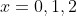
，则显然不构成怀疑假设正确的理由，因为她即使凭空瞎碰，平均也有猜中 2 杯的可能。若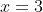
或 4，则表面上显示她可能有一定的鉴别力，但是否已超出了“瞎碰”所能解释的范围呢？这就要具体分析。对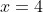
的情况我们已做了计算：单凭“瞎碰”做到这一点的机会只有 1/70，这数字太小，使我们觉得，把她的成绩委之于碰运气不甚合理，因而倾向于否定她没有鉴别力的假设。若 ，则计算表明，即使纯凭瞎碰，该女士得出这么好甚至更好的成绩的概率，也有 17/70 ≈ 0.243，接近 1/4。1/4 的概率不算太小。好比说，4 人抽签分一张票，你有幸抽中了，算不得碰上大运气的事。因此， 这个结果，没有给否定“女士无鉴别力”这个假设以充分的支持。费歇尔把这种性质的推理叫作“显著性检验”。显著一词，是指由数据中反映“效应存在”的显著程度如何，而这显著程度则是用概率来表示，概率愈小，显著性愈高，肯定效应存在的理由就愈充足。在应用上，可以用两种方式来解释数据分析的结果。
一种是只把算出的显著性作为对“效应存在”的支持力度的一种评估，不一定需要做出一个黑白分明的结论。拿上例来说，若 ，我们评估说它给效应存在的说法以较充分的支持，而不必直言断定“效应存在”。若 ，则说数据给“效应存在”的支持力度不大，也不必直言断定“效应不存在”。
另一种是必须得出一个黑白分明的结论。比如说我们尝试某种工业品生产工艺的改变，而要检验这是否有助于改善该产品的质量。在这时，所做的假设是“这改变对改善产品的质量无益”。我们必须通过试验做一个决定：若决定接受这个假设，则什么也不做，一仍旧贯；若否定这假设，则按改变后的工艺进行生产。
解决这个问题的方法，是要对标志显著性的概率给定一个阈值。若算出的概率低于此阈值，即认为显著程度已足够大，因而就否定所做假设。反之，则认为显著性还不够，尚不足以构成否定所做假设的充分理由，也就是说，接受原来所做的假设。
阈值的设定并无客观的标准，但目前统计学上的习惯是将其规范化到几个常用的值：最常用的是 0.05，其次是 0.01、0.10，更小或更大的值也可以根据情况的需要去采用。相应地，在统计学上有“达到 0.05 的显著性”“达到 0.01 的显著性”等说法。拿“女士品茶”这个例子说，若她 4 杯全说对，概率为 1/70，它大于 0.01 而小于 0.05。故若把阈值定为 0.05，则我们做出“否定假设”的结论，即认为该女士对 TM 和 MT 有鉴别力；若把阈值定为 0.01，则尚不能做出这样的结论。
读者可能会感到惶惑：同样的试验结果，仅由于阈值选择的不同，所得结论完全两样，而阈值选择又无客观或法律的标准。对这个问题的解释，牵涉到统计方法的本性。如我们在第 2 章中曾指出的，统计方法是通过表面上的数量关系去探测事物的可能真实情况，它不能保证不犯错误。在对一个假设进行检验时，有可能发生以下两种错误之一：一是假设本来正确，却被否定了（女士对 TM和 MT 本无鉴别力，被误认为有）；一是假设本不正确，却被错误地接受了（女士对 TM 和 MT 本有一定的鉴别力，被误认为无）。对不同的问题，这两种错误的后果不一。如拿工艺改变对产品质量有无改进的例子说，犯前一种错误不仅白白耗费了许多为改变工艺而用的资金，还有可能使产品质量恶化；犯后一种错误则可以丢失一个能改进产品质量的机会。这里面孰轻孰重，需要工厂有关人员根据问题的具体情况妥加权衡，阈值的设定就取决于这种权衡的结果：若前一种错误的后果相对更为严重，则应当设立一个较低的阈值，以使得所做假设不会轻易地被否定。在相反的情况，则可指定较大的阈值。如在上例，若改变生产工艺在投资上花费极大，则非有很显著的证据（认为改变后的工艺更好），不打算改变现有工艺。与此相应，就要设立很低的阈值。
在统计学上，把上面解释的阈值（0.05、0.01 等）叫作“水平”或“显著性水平”。如说“在 0.05 的水平上否定了所做假设”，就是指偏差的概率低于 0.05。阈值的人为性是一个常见的现象，往往是为了将事物分类而不得已做出的一种选择。例如考试，60 分算及格，59 分不及格。难道这 1 分的差别意义如此重大？当然不是。一般，学生某门功课不及格得重修。为决定谁是否需要重修，一个明确的数量界限是必需的，尽管它不尽合理。
上面的解释也与下面这个问题有关：在上面的讨论中，我们总是把“效应不存在”这一面作为假设去接受检验。在有的情况下，如在女士品茶这个例子中，这样做固然可能是因为打一开始我们就不相信所设想的效应可能存在，但也不尽然。如在改变工艺以图改进产品质量的例子中，通常总会有一些根据认为质量可能因此得到改善，才会进入试验阶段。换句话说，我们是打一开始就相信效应可能存在。然而，即使在这样的情况下，我们仍要把假设定为“效应不存在”，这是为什么？
这有点像司法审判中的“无罪推定”概念。在对某种效应判定一个有无时，我们的出发点取为“无”，为的是防止将无说成有。“有”的判断通常意味着对已有事物（已有的工艺流程、种子品种之类）的更张，已有理论或学说的修正甚至否定等，其蕴含的风险可能出乎我们的预料，故对此应持慎重态度。这样来定假设，并辅之以较低的水平值（0.05、0.01 之类），使“无”的假设不至于在数据未提供充足证据的情况下被否定。这样一种行事稳健的倾向（说成是保守倾向也可以：保守有“不轻易做更张”的意思，不一定是贬义词），是将水平值取得较低的原因所在。
当然，把“有”说成“无”也是错误，它会使我们失掉机会，失去本可得到的收益。因此，也不能忽视这方面的问题。两全其美的解决是：设法找出一种检验方法，使犯这两种错误（无说成有、有说成无）的概率都尽量地小。这也就是“假设检验”这个数理统计学分支学科所研究的中心问题。应当指出的是：这不只是一个方法问题，更重要的是要有充足的数据。数据太少，偶然性的影响就增大，即使方法如何好也无济于事。确切一点儿说，在一定的数据量之下，方法的作用有一个限度在，我们只能通过对水平的选择来调控犯两种错误的机会的大小：把水平值调低增加犯第二种错误（把有说成无）的机会而降低犯第一种错误（把无说成有）的机会，而选择高水平值的效果则正与此相反。
现在要简略讨论一下检验方法的选择问题，这要回到我们就费歇尔“女士品茶”例子所总结出的几个要点。首先，要找一个显示试验结果与假设之间的偏差的量。在有些问题中选择是明显的。如在“女士品茶”的例子中， 该女士挑对的杯数这个量，看来是唯一可能的选择。在有些例子中则不然。如为检验新工艺对产品质量的改善有无作用，我们检测  件在现工艺下的产品的质量指标，得
件在现工艺下的产品的质量指标，得
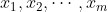
。再检测在新工艺下 件产品的质量指标，得
件产品的质量指标，得 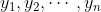
，考虑以下两个反映偏差的量。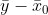
。 是 的算术平均，
是 的算术平均，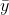
是 的算术平均。如果指标愈大时产品质量愈好，则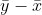
愈大，数据与“新工艺无效应”的假设的偏差就愈大。当它大过一定的限度 （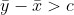
）时，我们感到有充足的证据否定假设；若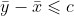
，则认为证据尚不充分，假设不被否定。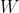
。“秩”是指一个数据在全部数据中位次的高低。我们一共有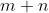
个数据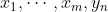
，如果把它们由小到大排成一列，并将最小者的秩定为 1，次小者的秩定为 2，以此类推，到最大者的秩定为 ，则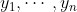
这 个数据有 个秩，它们的和就是秩的和 。例如，若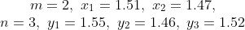
则这 5 个数据按由小到大排序为
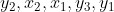
，3 个 样本的秩分别为
样本的秩分别为 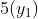
、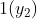
和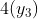
，秩的和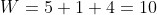
。显然， 愈大，数据与“新工艺无效应”的假设的偏差就愈大。当 大过一定的界限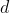
（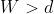
）时，认为有充足的理由否定假设；若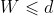
，则认为理由尚不充分。这两种取法看上去都很合理，哪一种更好？这正是统计分析要解决的问题，因其涉及高深的数学理论知识，无法在此细论。我们只指出，方法的优良性取决于问题的具体情况，确切一点儿说，是取决于数据的概率分布，即数据所受随机性影响的确切描述。如在本例中可以证明：当数据服从正态分布（见第 1 章）时，用 优于用 ，但在数据服从许多别的分布的情况下，则用 优于用 。分清在何种情况下使用何种方法为最优，就是统计方法研究的任务。
在解决了反映偏差的量的选择后，次一个问题是界限的选择。如在上例中，若选择 ，当 时否定假设，这个界限 如何选取？这问题的回答在原则上简单：根据给定的检验水平值，我们要这样选择 ，使在假设成立的条件下， 这个情况发生的概率，恰好等于给定的水平值。例如，给定水平值 0.05，上述要求可以用公式表述为
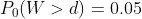
，式中  是概率的记号。 脚下有个“0”，表示概率是在假设成立的条件下去计算的。一个例子是女士品茶。在该例中，我们计算出在该女士对 TM 和 MT 并无鉴别力的条件下，4 杯全挑对的概率为 1/70。这“无鉴别力”就是我们的假设，它在计算概率时所起的作用是，使 70 种不同的挑法可视为同等可能的。其他的例子原则上与此类似，但具体计算的难易不同。在一些重要情况下，统计学家通过大量计算制成了表格，在应用时查表即可解决问题。在许多情况下，确切的计算很难，只能用一些近似的方法去处理。
是概率的记号。 脚下有个“0”，表示概率是在假设成立的条件下去计算的。一个例子是女士品茶。在该例中，我们计算出在该女士对 TM 和 MT 并无鉴别力的条件下，4 杯全挑对的概率为 1/70。这“无鉴别力”就是我们的假设，它在计算概率时所起的作用是，使 70 种不同的挑法可视为同等可能的。其他的例子原则上与此类似，但具体计算的难易不同。在一些重要情况下，统计学家通过大量计算制成了表格，在应用时查表即可解决问题。在许多情况下，确切的计算很难，只能用一些近似的方法去处理。
以上讲述的这一套显著性检验的思想和方法，是费歇尔于 20 世纪 20 年代在英国一个农业试验站工作期间发展起来的。在那里，他经常碰到如比较几个种子品种、几种肥料和施肥方法之类的问题，也就是某种效应是否存在的问题。他处理的这些问题往往涉及多个对象的比较，比我们前面举的例子要复杂——该例只涉及两个对象（新、旧工艺）的比较。可能这样想：多个对象的比较可以通过每次取 2 个比较去处理。这不失为一种可考虑的方法，但在多数情况下不是最好的方法。为处理多个对象比较的问题，费歇尔发展了一套被称为“方差分析”的方法，这方法如今应用很广，是统计方法研究上的一项重大成就。这一套方法与我们在第 4 章中讲的试验设计密切结合：不同的试验设计，其数据的方差分析形式也有所不同。也应提到，显著性检验的发展也并非费歇尔一人的功劳。与他同时代的一些大学者，有的在特定问题的方法研究上有突出的贡献，有的在理论上建立了严密的体系，弥补了费歇尔研究中的不足之处。